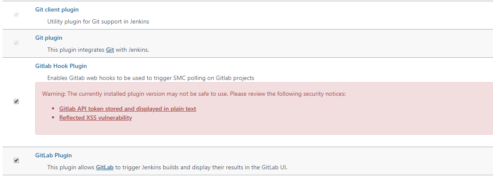

安装Jenkins
https://blog.xuguoqian.com/2020/11/16/CentOS7安装Jenkins/
安装Gitlab
https://blog.xuguoqian.com/2020/11/17/CentOS7安装gitlab/
配置Jenkins
安装和Git，GitLab插件
系统管理 -> 插件管理 -> 搜索插件并安装
配置GitLab插件
安装好GitLab插件后，系统管理 -> 系统配置，下拉找到gitlab配置项：
Gitlab API token的获取：
生成token后，就可以添加Jenkins的Credentials了：
创建一个Jenkins Job
可参考Jenkins自动布署你的Vue项目配置Job
这里主要是采用webhook来监听，从而实现gitlab的自动发版。想用CI/CD的pipelines模式或其他模式的，自行google。
打开新建的Job：进入配置:
选择GitLab Connection：（在第二步配置的配置项）
然后其他步骤和Jenkins自动布署你的Vue项目中一样
配置Gitlab
- 配置Jenkins构建触发器
- 配置Gitlab的webhook
然后你就可以监听到项目的master分支的push事件，实现自动发版了。